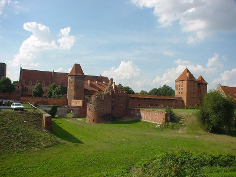

Największy na świecie zamek pod względem powierzchni, usytuowany w Malborku, na prawym brzegu Nogatu. Wzniesiony w kilku etapach od 1280 do poł. XV w. przez zakon krzyżacki, początkowo konwentualny i siedziba komtura, w latach 1309–1457 siedziba wielkich mistrzów zakonu krzyżackiego i władz Prus Zakonnych, w latach 1457–1772 rezydencja królów Polski, od 1466 siedziba władz Prus Królewskich, od 1568 siedziba Komisji Morskiej, w 1772 zajęty przez administrację Królestwa Prus i zdewastowany w latach 1773–1804; rekonstruowany w latach 1817–1842 i 1882–1944, zniszczony w 1945, ponownie rekonstruowany od 1947; w 1949 wpisany do rejestru zabytków, w 1994 uznany za pomnik historii, w 1997 wpisany na listę światowego dziedzictwa UNESCO; od 1961 siedziba Muzeum Zamkowego w Malborku.
Zespół zamkowy w Malborku obejmuje: